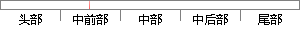

系统的总体结构主要包括整个嵌入式操作系统的引导启动、硬件的初始化、操作系统的运行等。
片段位置图

相似结果
相似片段：Linux等嵌入式操作系统的广泛使用,使嵌入式系统的...系统启动时,安全控制器 SC首先检测所有的安全条件...总体软件结构主要包括四个部分:系统引导加载程序、...
| 标题 | 《基于嵌入式系统的绿色能源测控系统研究》 |
| 对比库 | 中国学位论文全文数据库 |
| 作者 | 雷红路 |
| 机构 | 南京航空航天大学 |
| 分类 | 测试计量技术及仪器 |
| 年份 | 2007 |
| 相似率 | 73.53% （轻度抄袭） |
※ 片段修改建议 ※
近似词参考：- 主要：首要 重要
- 包括：包罗 包孕 包含 囊括
- 系统：体系
- 总体：整体
- 整个：全部
- 结构：布局 构造
- 引导：指导 引诱
系统自动生成语句： 体系的整体布局首要包罗全部嵌入式操作体系的指导启动、硬件的初始化、操作体系的运行等。
注：本片段修改建议为系统自动生成，仅供参考。